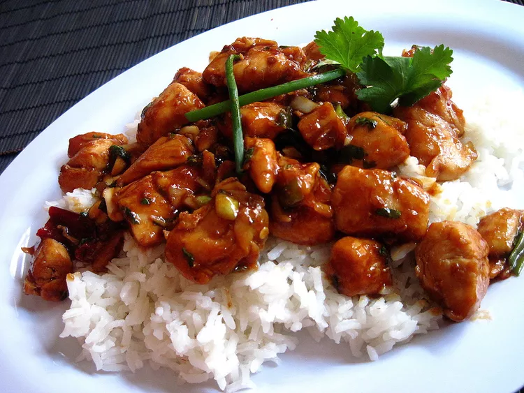

Kungpao Chicken

Description
Kung Pao chicken (a.k.a. Gong Bao or Kung Po) is a stir-fried Chinese dish that consists of cubed chicken in a sweet, spicy, and savory sauce. It originated in southwestern China in the early 1800s.
Ingredients
- 2 tablespoons cornstarch, dissolved in 2 tablespoons water
- 2 tablespoons white wine, divided
- 2 tablespoons soy sauce, divided
- 2 tablespoons sesame oil, divided
- 1 pound skinless, boneless chicken breast halves - cut into chunks
- 1 ounce hot chili paste
- 2 teaspoons brown sugar
- 1 (8 ounce) can water chestnuts
- 4 ounces chopped peanuts
- 4 green onions, chopped
- 1 tablespoon chopped garlic